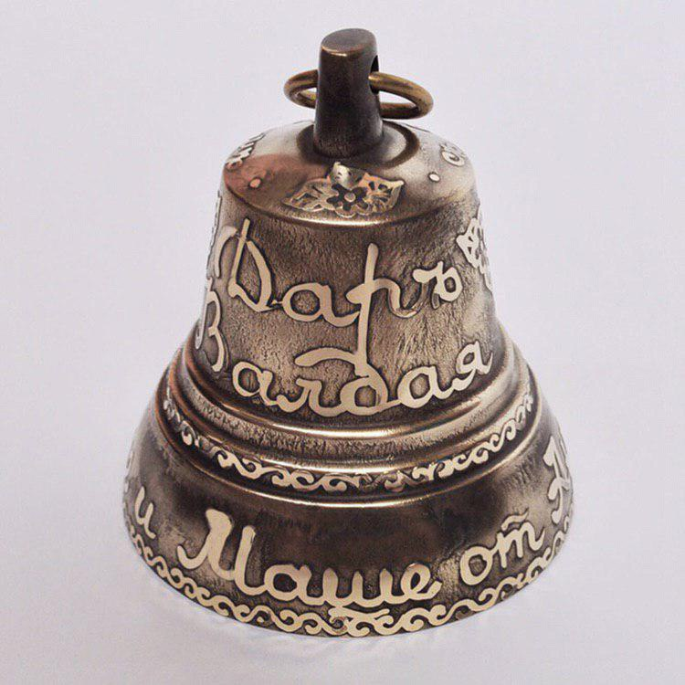
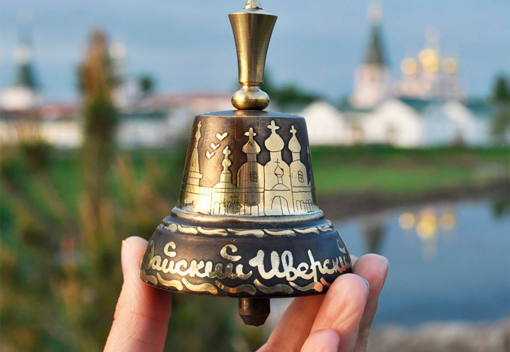
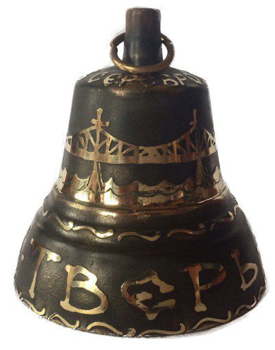
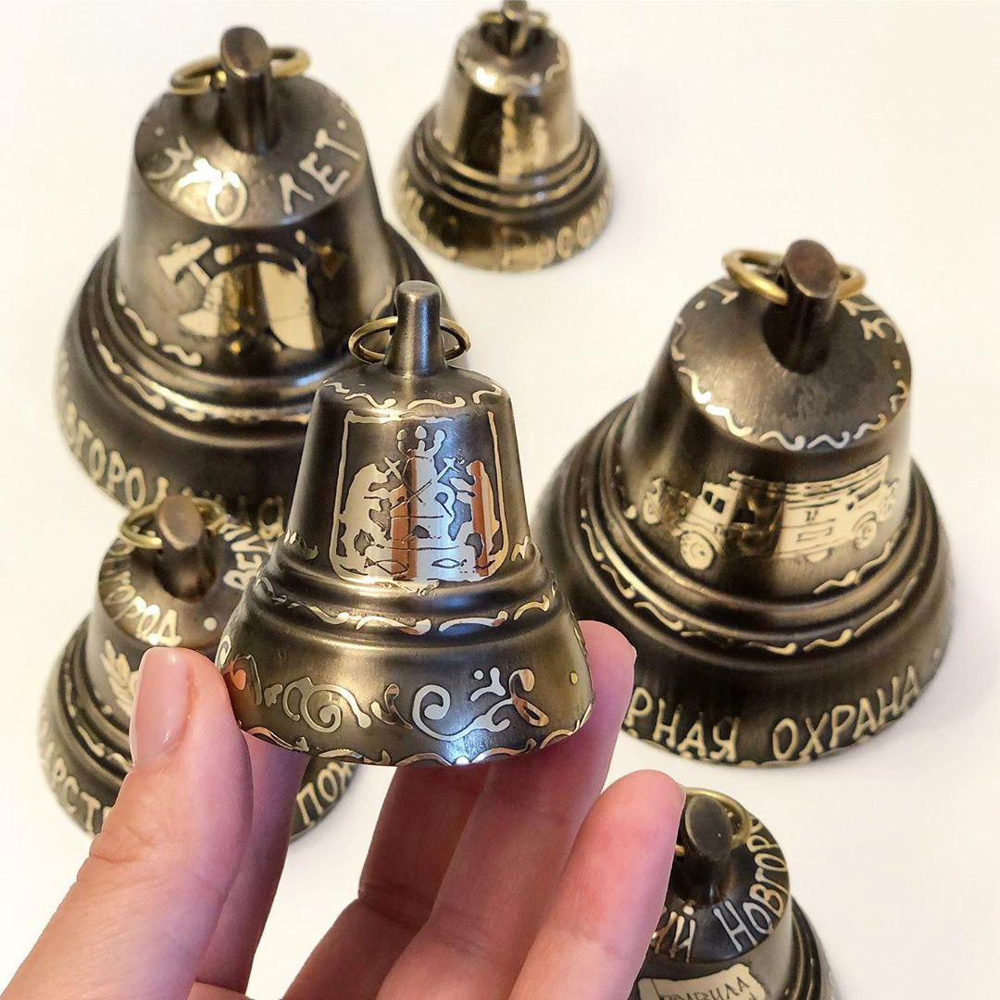

Ручная работа в деталях
У каждого колокольчика
У каждого колокольчика
своя история
Узоры, памятные надписи и знакомые места. Здесь собрали примеры работ мастерской — посмотрите, каким может быть ваш колокольчик.

Валдайский орнамент
Золотистые надписи и орнаменты на чернёных колокольчиках с ручками.


Именная надпись
Именное послание на юбке колокольчика.


Иверский монастырь
Архитектурный рисунок и надпись о Валдайском Иверском монастыре.


Символика Твери
Изображение городского моста и надпись «Тверь».


Эмблемы и символы
Рисунки и памятные надписи в ручном исполнении.

Памятная надпись
Колокольчик с надписью «Finisher 105» на память о событии.

Колокольный узор
Колокольчик №4 с рисунком колокольчиков.

Дар Валдая
Надпись «Дар Валдая» и орнамент на колокольчике с ручкой.

Формы и рисунки
Примеры форм и художественного оформления валдайских колокольчиков.